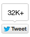
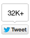

 autorstwa Anity Czarneckiej |  2,391,558 |
2,391,558 |
 12
12
Chcecie przytyć? Najlepszy jest związek z karmicielem (feederem)!
 Blog Anity
Czarneckiej
Blog Anity
Czarneckiej Zawsze miałam skłonności do tycia, ale starałam się trzymać formę. Regularnie chodziłam na siłownię i nigdy nie pozwalałam sobie na ekstra przyjemności. Jednak wszystko się zmieniło, kiedy wyszłam za mąż. Okazało się, że mój mąż uwielbia kobiety, które są raczej pulchne. Na początku byłam zadowolona, bo wreszcie mogłam przestać sobie odmawiać. Zamiast kwiatów co wieczór przynosił mi kubełek skrzydełek z KFC i dużą porcję frytek. Łykaliśmy je, popijając hektolitrami napojów gazowanych.
Pewnego dnia tak się przejadłam, że aż było mi niedobrze. Ale mój mąż i tak naciskał, żebym zjadła swojego trzeciego Big Macka. Zagroził nawet, że mnie zostawi, jeśli tego nie zrobię. Ze łzami w oczach zjadłam tego burgera, nienawidząc zarówno siebie jak i jego. Wtedy pomyślałam, że mój mąż być może nie był osobą, jakiej potrzebowałam.
Któregoś dnia byłam sama w domu i postanowiłam przejrzeć historię jego przeglądarki. Znalazłam tam linki do filmów porno z kobietami, ważącymi 200-300 kg i nie tylko. To był ostatni element układanki. Uświadomiłam sobie, że jestem w związku z karmicielem (tzw. feederem z j. ang.) i on chciał, żebym też tak wyglądała. Wyszłam za zboczonego dziwaka! Miałam dość. Moje życie i zdrowie były ważniejsze niż ten mężczyzna. Złożyłam pozew o rozwód.
Wreszcie byłam wolna i postanowiłam zadbać o swoje ciało.
I tu dopiero zaczęły się schody. Przy wadze 123 kg nie bardzo zaleca się uprawianie sportu. Nie mogłam też zacząć diety, bo byłam przyzwyczajona do przejadania się. Uznałam, że jedyne, co mogę zrobić, to skontaktować się ze specjalistą. Zrobiłam sobie wszystkie niezbędne badania i umówiłam na spotkanie z dietetyczką. Powiedziała, że po pierwsze musimy zacząć od detoksu. Zważywszy na to, co do tej pory jadłam, a w szczególności w jakich ilościach, potrzebowałam czegoś skutecznego, o silnym działaniu. Okazało się, że jest to glinka wulkaniczna, jedyna substancja zdolna wypłukać toksyny z organizmu. Niestety smutna prawda była taka, że cena kuracji taką glinką była kosmiczna. Stać mnie było wyłącznie na opłacenie wizyty. Więc postanowiłam poszukać tej glinki na własną rękę.
W domu sprawdziłam, że glinka bentonitowa jest bardzo popularna wśród gwiazd. Aktorki i słynne modelki stosują ją, żeby schudnąć. Znalazłam kilka sklepów, w których można było ją kupić, ale miałam wątpliwości, co do jakości oferowanych produktów. Nie miałam ochoty jeść żadnej gliny. Dlatego wybrałam . Ta glinka bentonitowa pochodzenia wulkanicznego została oczyszczona przy zastosowaniu nanotechnologii oraz wzbogacona kofeiną, błonnikiem owsianym i innymi składnikami niezbędnymi dla dobrego samopoczucia. Sposób, w jaki była zapakowana, również był bardzo bardzo wygodny: sprzedawana jest w szczelnie zamkniętych torebeczkach, a jej konsystencja przypomina cukier puder. Od razu zamówiłam kilka opakowań, ponieważ pojęłam, że proces oczyszczania nie będzie szybki.
Każdego ranka przed śniadaniem przygotowywałam sobie taki specjalny napój – łyżeczkę sproszkowanej glinki dobrze mieszałam z wodą, odstawiałam na 10 minut i jeszcze raz mieszałam przed wypiciem. Tydzień później zauważyłam, że łatwiej mi się oddycha i szybciej trawię posiłki. Miesiąc później na wadze zobaczyłam już 111 kg. Co za sukces!

Powrót do do formy zajął mi 8 miesięcy, w ciągu których udało mi się osiągnąć wagę 60 kg. Dieta wzbogacona glinką ma dodatkową zaletę – oczyszcza skórę. Trądzik, który miałam, odkąd byłam nastolatką, zniknął.

Wiem, że wielu kobietom bardzo trudno jest schudnąć. Pozbycie się nadwagi może zająć lata. Mam nadzieję, że pomogą wam moje doświadczenia z odchudzaniem. Zamówiłam tutaj . Glinki nie sprzedają w aptekach. Producent oferuje teraz fajną promocję, więc jak chcecie kupić , to lepiej się pospieszcie.

50% RABATU dla naszych czytelników:

Skorzystaj z naszego EKSKLUZYWNEGO linku i odbierz swój rabat już dziś!


Komentarze:
Dokładnie, znam takich zboczeńców, psycholi i dziwaków! Niektórzy chcą chudych lasek, a inni wolą grube krowy, co ważą 200 kg.
Od 2 lat piję tą glinkę i świetnie działa. Szklanka dziennie rano pobudza proces odchudzania. To prosty, skuteczny i szybki sposób. W ciągu 2 lat udało mi się schudnąć 34 kg.
Odchudzanie za pomocą glinki? Serio?! Blokuje jelita i powoduje zatwardzenie. Czy wyście poszalały?
Całą rodziną robimy sobie kuracją glinką dwa razy w roku. To prosty i skuteczny detoks. Ja czuję się świetnie, lekko, mam mnóstwo energii, a mój organizm się regeneruje. Mąż na początku miał sceptyczne nastawienie, ale teraz to on rano szykuje dla nas wodę z glinką. Polecam.
Ludzie spróbują wszystkiego, żeby schudnąć! Będą nawet jeść ziemię! Halo?!
Izabela, nie widzę powodów, żeby tak mówić. Glinkę stosuje się od pokoleń, żeby oczyszczać wodę i może pomóc wyleczyć wiele chorób. Jak wolisz, możesz łykać świństwa z aptek.
Nigdy nie słyszałam o tej metodzie na odchudzanie, ale brzmi interesująco. Wypróbuję.
Idealny produkt, jak ktoś chce oczyścić organizm, a do tego schudnąć. Ja w ciągu dwóch kuracji pozbyłam się 15 kg i to bez wysiłku i jedząc to, na co miałam ochotę.
Jaki w ogóle miałaś problem? Mogłaś jeść, tyć i cieszyć się życiem. Kogo obchodzi, jak wyglądasz, on cię kocha – tylko to się liczy!
Już dawno słyszałam o piciu glinki, ale nigdy nie udało mi się znaleźć rzetelnego sprzedawcy. Zamówię, bo bardzo mnie kusi, żeby wypróbować.
Każdego ranka przygotowuję dla męża szklaneczkę wody z glinką. W ciągu miesiąca on schudł 8 kg, szczególnie w okolicy brzucha. Ja też zaczęłam to pić. Nie zaszkodziłoby mi odrobinę schudnąć. Każdego dnia widzę, że mam mocniejsze włosy i paznokcie. Skóra odzyskała dawną urodę. To mi się podoba!
Muszę też spróbować... Kocham burgery, ale one z pewnością mnie nie odchudzą. Jak tylko przytyję parę kilo, partner od razu mówi, żebym poszła pobiegać, albo na basen. Nie mogę sobie odpuścić :(((